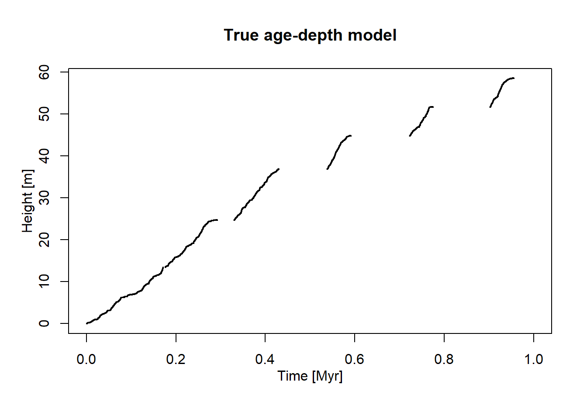
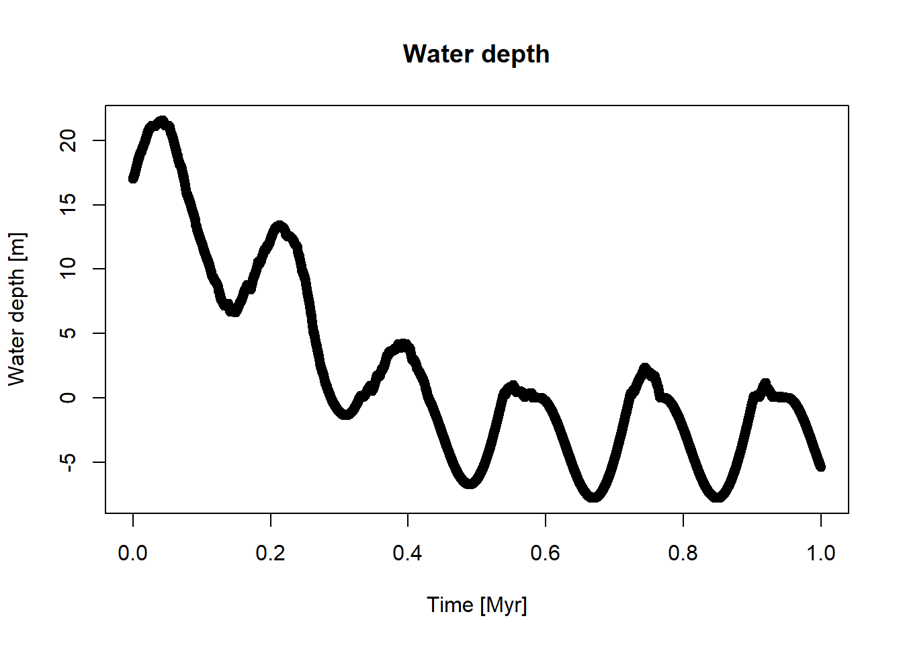
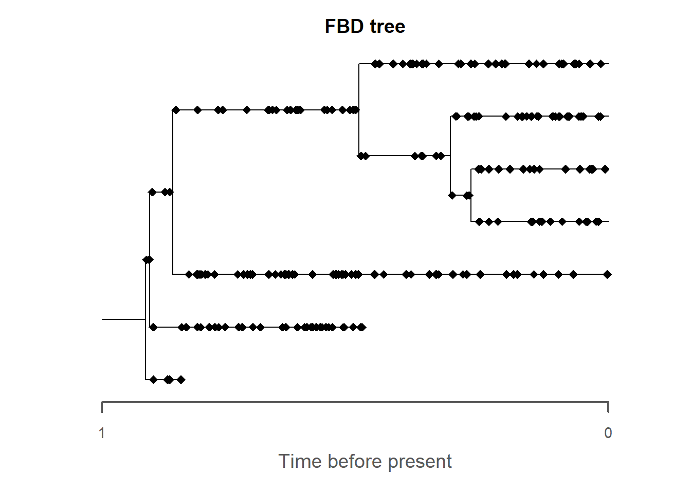
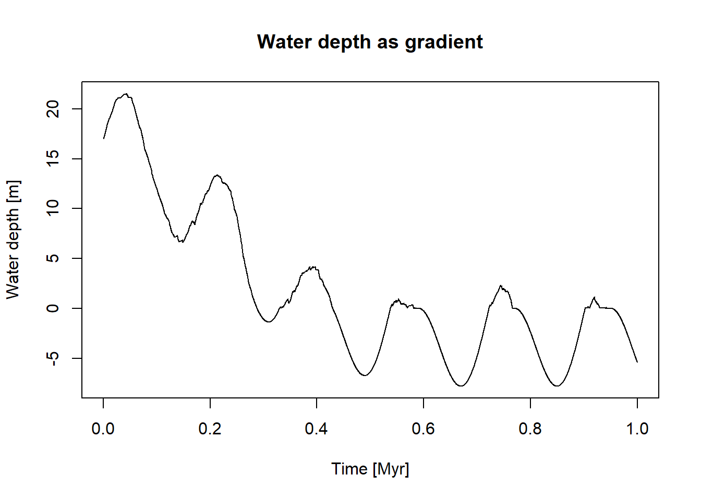
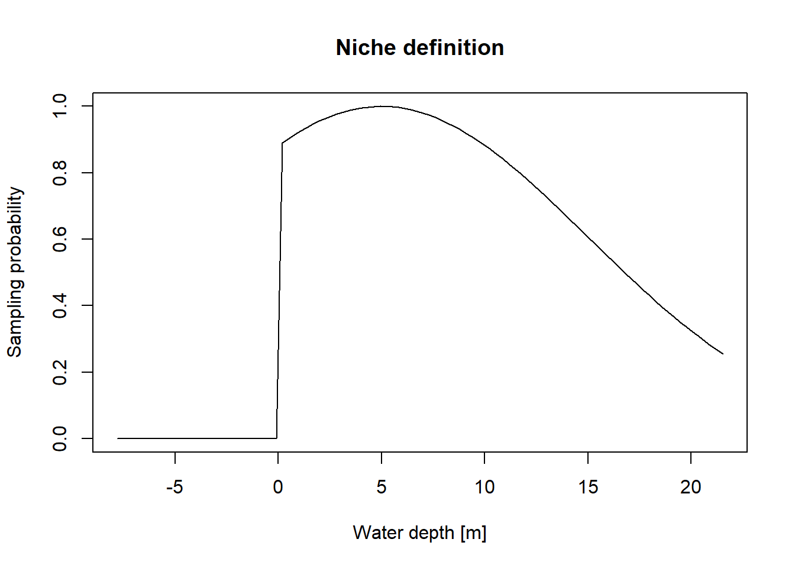
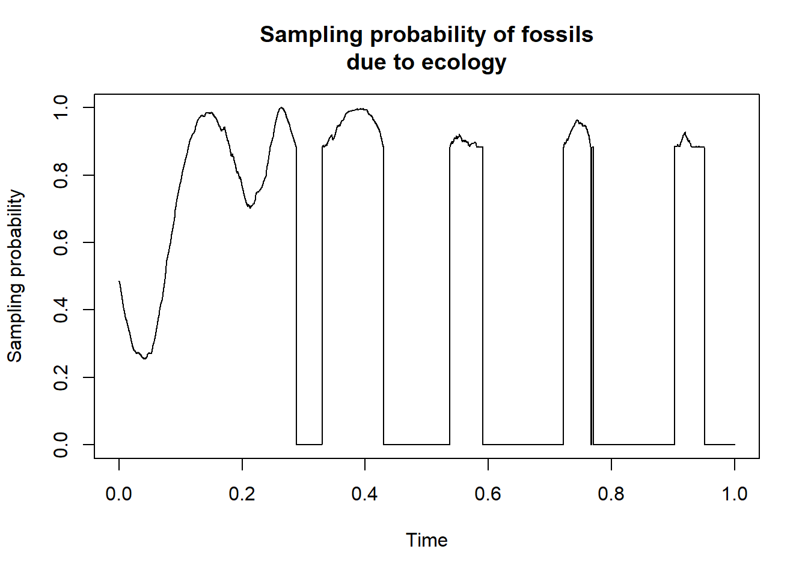
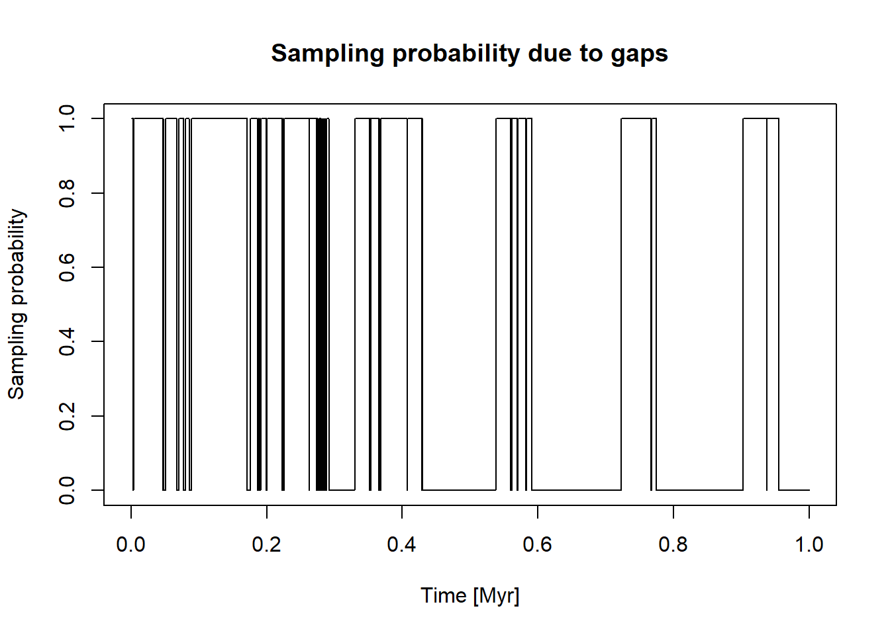
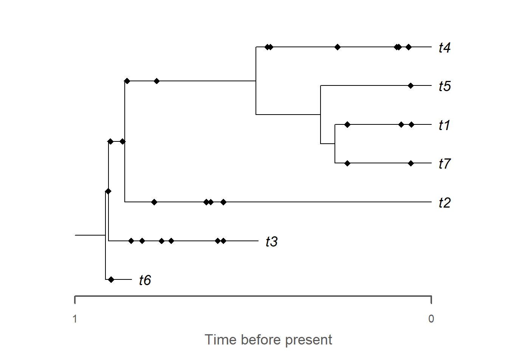
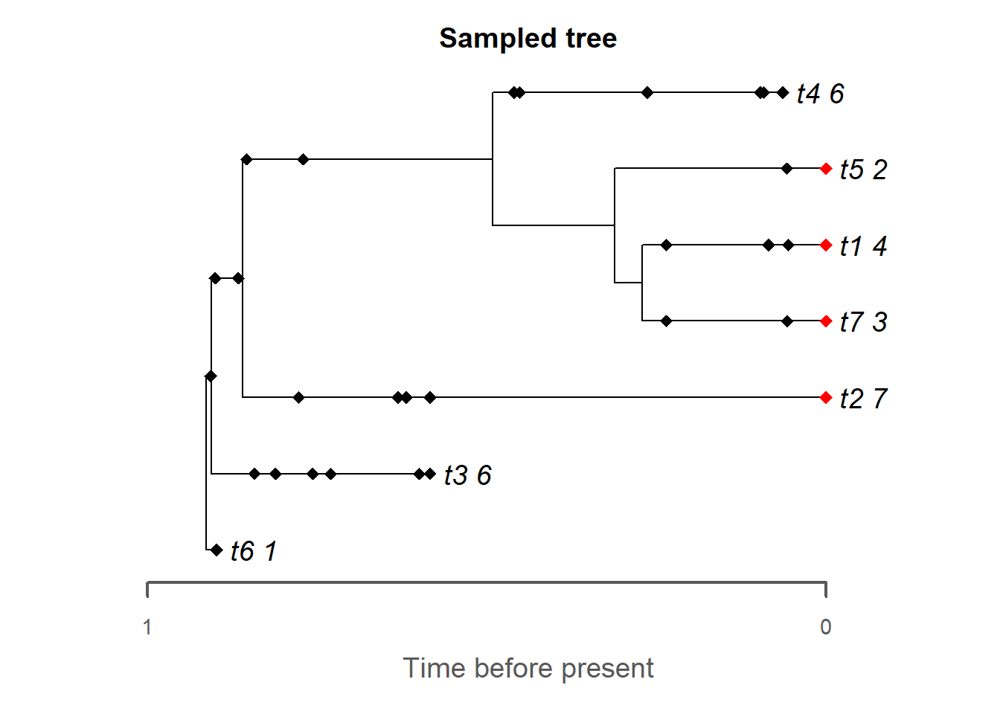

This chapter combines everything we have learned so far by combining stratigraphic paleobiology and phylogenetics into one forward simulation. At the end of this chapter, you will have built a complete simulation pipeline consisting of
A stratigraphic forward model (CarboKitten) that simulates age-depth models and environmental gradients such as water depth and facies
A FBD tree that describes the evolutionary relationship between taxa
Fossils sampled along the tree according to an originally constant sampling rate, which is modified by gaps in the stratigraphic record and ecological as well as taphonomic effects
A character matrix for the fossils evolving according to a specified model of evolution and potentially missing characters due to differential preservation
Fossil ages that are potentially offset due to age misassignment or uncertainy
With all these pieces in place, we can then address two key questions in the next chapter:
When we run inference on the simulated data (fossil ages, character matrices), can we recover the “true” evolutionary history (e.g., tree topology, model parameters)? More speculatively, can we potentially recover stratigraphic information such as sediment accumulation rates and gap duration from phylogenetic inference?
Having build the forward simulation pipeline, can we use our knowledge of stratigraphy and the sampling process as sources of information in the inference? And if yes, does it improve the inference?
Your task for this chapter is to modify the provided pipeline according to your work in the last 3 days and simulate your very own fossil record. At the end you should have two components: (1) simulated biased data that you would usually use for inference, specifically a character matrix and fossil ages and (2) the biological and stratigraphic “truth” to compare inference results to. Specifically, this should contain the true sampled tree, age-depth relationship, clock rate, and model of morphological evolution.
11.2 Preliminaries
11.2.1 Stratigraphic data
Let’s begin by loading the stratigraphic information (age-depth model and water depth data).
adm_location ="../data/output/columns_adm.csv"wd_location ="../data/output/columns_wd.csv"# adjust if you have a different output locationdata_adm =read.csv(adm_location) # read age-depth model datadata_wd =read.csv(wd_location) # read age-depth model datakey ="mid"t = data_adm[,which(grepl("Myr", names(data_adm)))] # time step# select height column that contains the keyh = data_adm[,which(grepl(key,names(data_adm)))]wd = data_wd[,which(grepl(key,names(data_wd)))]# define age-depth modeladm = admtools::tp_to_adm(t = t,h = h,T_unit ="Myr",L_unit ="m")# some constants for simplicityh_max = admtools::max_height(adm)h_min = admtools::min_height(adm)t_max = admtools::max_time(adm)t_min = admtools::min_height(adm)plot(adm,lwd_destr =1, # line width destructive interval (hiatus)lwd_acc =2, # line width accumulative intervalcol_destr =NULL,col_acc ="black")admtools::T_axis_lab() # add time axis labeladmtools::L_axis_lab() # add length axis label (stratigraphic domain)title(main ="True age-depth model")plot(x = t,y = wd,xlab ="Time [Myr]",ylab ="Water depth [m]",main ="Water depth")


11.2.2 FBD tree
Next, simulate the tree and the fossils along it:
seed =42set.seed(seed)lambda =2mu =0.3psi =70tree = TreeSim::sim.bd.age(age = t_max,numbsim =1,lambda = lambda,mu = mu,frac =1,mrca =FALSE,complete =TRUE)[[1]]fossils = FossilSim::sim.fossils.poisson(rate = psi,tree = tree,root.edge =FALSE) # no fossils on root edge to avoid problems with MorphSimplot(fossils, tree = tree,main ="FBD tree",rho =0)

11.3 Taphonomy and ecology
As first part of the pipeline, let’s introduce ecological and taphonomic effects. As before, we use water depth as ecological gradient:
wd_opt =5wd_tol =10cutoff_val =0gradient =approxfun(x = t,y = wd)plot(x = t,y =gradient(t),type ="l",xlab ="Time [Myr]",ylab ="Water depth [m]",main ="Water depth as gradient")niche_def = StratPal::snd_niche(opt = wd_opt, # pref. water depthtol = wd_tol, # water depth tolerance (sd)cutoff_val = cutoff_val) # does not live above water wd_vals =seq(from =min(wd),to =max(wd),length.out =100)plot(x = wd_vals,y =niche_def(wd_vals),type ="l",xlab ="Water depth [m]",ylab ="Sampling probability",main ="Niche definition")


Combined, this results in the following sampling probability with time:
plot(x = t,y = t |>gradient() |>niche_def(),type ="l",xlab ="Time",ylab ="Sampling probability",main ="Sampling probability of fossils\ndue to ecology")

For the taphonomic effects, we again remove all fossils coinciding with gaps:
gap_remove = StratPal::strat_filter(adm)plot(t, gap_remove(t),type ="l",xlab ="Time [Myr]",ylab ="Sampling probability",main ="Sampling probability due to gaps")

Now we can apply our ecological and taphonomic filters to the fossil object:
Note that we can combine the original fossil sampling rate psi with the ecological and taphonomic effects to determine the continuously varying sampling rate in time:
Often, the original sampling rate psi needs to be chosen high to make sure any fossils are preserved. If you would like to subsample your fossils to a fixed small number, you can use the following function for it. We subsample to 30 fossils to reduce runtime in the inference later.
n_preserved =30subsample_fossils =function(fossils, n){#' randomly select a number of fossils ind =sample(seq_len(length(fossils$sp)), size = n)return(fossils[ind,])}fossils2 = fossils_pres |>subsample_fossils(n = n_preserved)plot(fossils2,tree = tree,show.tip.label =TRUE,rho =0)

11.4 Add extant samples
Now we add the extant samples to the fossil object. This yields the sampled tree after after taphonomic and ecological effects.
rho =0.5# proportion of extant tips that are sampledfossils_used = FossilSim::sim.extant.samples(fossils = fossils2,tree = tree,rho = rho)# plot the outputplot(fossils_used,tree = tree,extant.col ="red",show.tip.label =TRUE,reconstructed =TRUE,main ="Sampled tree")

11.5 Simulate morphological characters
Now we can simulate morphological characters along the tree and the preserved fossils. We focus on the simple Mk2 model here, insert your own if you like.
Now we introduce age-misassignment of the fossils. Again, we assume a simplified age-depth model based on the assumption of constant and uninterrupted sedimentation:
You can also use a more complex assumed age-depth model, e.g., one from another location. This would emulate the situation where you wrongly correlate through a basin.
Now we can modify the ages stored in the fossil object:
fossils_age_misassigned = morpho_mk$fossil |> admtools::rev_dir(ref = t_max) |> admtools::time_to_strat(adm, destructive =FALSE) |> admtools::strat_to_time(adm_assumed) |> admtools::rev_dir(ref = t_max)# set destructive = FALSE to avoid destruction of extant samples# replace correct ages with misassigned ages# for easier export via MorphSim::write.morphomorpho_mk$fossil = fossils_age_misassigned
Do you know why this is only done now and not in one of the earlier steps that modify the fossils?
11.7 Export data
Finally, we can export the tree, character matrix, and fossil ages:
You now know many different effects that go into the sampled tree, character data, and ages. For your study system, which do you think are most relevant?
We have focused on forward simulation so far. If you had perfect knowledge of all these effects, how would you incorporate them in phylogenetic inference?